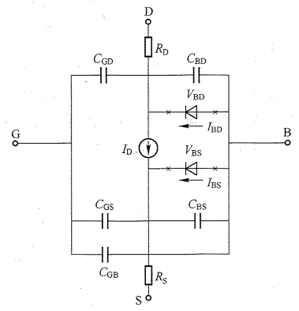
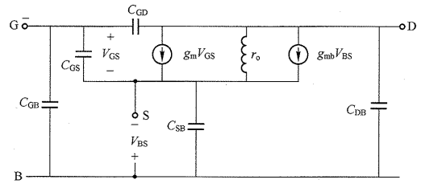

半导体器件2-MOS管
MOS管原理
既然半导体材料这么有意思,又能整流,又能放大,那科学家就提了,能不能做开关呢?
于是就有人做出来啦！来看看这个小开关!


- 把一个P型的半导体材料作为地基(叫做衬底),连接的电极叫做基极(Bulk,主体);
- 在上面铺一层厚厚的材料(这玩意儿自然界很多,土里到处都是,记住是绝缘的就可以了),叫做场氧化层,
- 在某一个小区域把厚厚的削薄,叫做刻蚀,形成很薄的薄膜.
- 在该区域的两侧大量注入N型原子(磷原子等),形成N型区域(记为扩散区),这个过程就是掺杂的过程;
- 然后使用淀积的方法长一层多晶硅材料(Poly-Silicon,以多个硅原子核(晶核)为中心,向不同方向生长的硅晶体),并掺入杂质原子使其能在常温下导电,形成类似金属的功能.把多晶硅的电极叫做栅极(gate ,门的意思,中文翻译做栅栏门,阀门);
- 这种金属(Poly)-氧化物(Oxide)-半导体(Semiconductor)结构,简记为MOS. 你可能有疑问,这尼玛分明,就是多晶硅,你非要说时金属? 其实多晶硅可以通过重掺杂(浓度高)来改变其导电能力,从而调整MOS开关的阈值电压,而金属不方便调阈值电压.
- 截止区：当,N区多子(主要是N区多子和极少数的衬底中少子)受到电场的勾引,向上移动与P型半导体的多子空穴结合,在表面留下了形成一层耗尽层(仍没有多余的电子用于导电).NMOS两个N区被P型衬底隔开,在和之间加电压也不会电流。
- 线性区：继续增大, 耗尽层变厚,直到靠近表面的电子越来越多,当多于空穴时,在表面形成电子层,叫做反型层,与两个N区连成一片,这片反型层的区域叫做沟道.它可以导电,此时的电压叫做 阈值电压,记做.N区和沟道区等能够在衬底表面导电的区域,叫做Active区,国内叫做有源区. 既然能导电了,那么我在两片N区两端加上电势差,就可以有电流通过. 其实,在略低于阈值时,也有较小电流通过,叫做亚阈值区.此时MOS管进入线性区.
- 沟道长度L 是集成电路工艺的制程标准.沟道宽度W 在模拟集成电路设计中至关重要.
- 导通时沟道中为电子的,叫做Ｎ型沟道,MOS管叫做NMOS. 反之,导通时为空穴的,叫做PMOS管.
- 把两片N区物理上没有任何区别; 但为了区分,设定源极(source,电源)作为载流子的来源,漏极(drain,排出,泄漏)是载流子的电极.因此,NMOS的低电位端为源极,PMOS的高电位端为源极.
注意,MOS管的阈值电压与PN结的阈值电压原理上不同. MOS管时反型层生成时的电压,PN结是内电场被抵消时的电压.
饱和区: 进一步增大时,S极和D极之间形成电场,导致,所以D端沟道会变窄.直到刚好D端沟道消失,这种情况叫做预夹断.此时的电压叫做过驱动电压,记做.漏极电位进一步上升时,漏极的反型层消失,出现夹断区(其实夹断区长度远小于沟道长度,可能只有几个nm).全部落在夹断区,电子沿着沟道运动时向漏极运动,到达夹断区时,会在较强的电场作用下直接漂移向漏极.此时在保持为恒定值的前提下增大,沟道电流几乎不变(S端的沟道厚度没有变).此时MOS管进入饱和区.如果保持恒定,增大，则反型层(沟道)变厚,相当于增大了导体的横截面积,DS之间的电流也随之增大,从而达到放大信号的目的.MOS管放大的本质是改变了沟道电阻,产生了电流,因此是压控电流源(VCCS). 但注意：过度增大会使MOS管的栅氧化层击穿.
击穿区: 当过大时,D端电压会远高于衬底电压,漏端的PN结会反向击穿.$V_{DS}电流会很大.
MOS管总结
- 截止区(): .
- 亚阈值区: ,ξ为非理想因子,为热电压.
- 线性区(,): 其中为N型半导体载流子(电子)的迁移率,为单位面积的栅氧化层电容.
饱和区(放大)(,):
 MOS管的输出特性曲线
MOS管的输出特性曲线
BJT的输出特性曲线中,放大区受控制,三个区域分别是截止区,饱和区,放大区; MOS的输出特性曲线中,放大区受控制,三个区域分别是截止区,线性区,和饱和放大区.
在模拟CMOS集成电路设计中,我们只关注MOS的饱和区.在CMOS数字电路设计中,一般工作在线性区.
MOS管的大信号模型(交流信号的幅度很大):
NMOS管的直流工作点MOS管的小信号模型(交流信号的幅度很小):
NMOS管的基本小信号模型
沟道长度调制效应. 事实上,考虑沟道长度受到影响,对公式做出修正. 此时,MOS管的导通电阻不为0. 对于长沟道,沟道长度调制系数的值很小. 此时NMOS管的小信号模型变成了下图.
 考虑沟长调制后NMOS管的小信号模型
考虑沟长调制后NMOS管的小信号模型体效应 在CMOS集成电路中,所有的PMOS管的基极接,所有NMOS管的基极接GND. 之前都假设了, 衬底和源极相连.然而,大多数情况下该情况不成立.例如,最常见的电路二输入与非门中,T2管的S极电压与T1管的D极电压相等,由于导通电阻的存在,其电压不为0. 在传输门中,这种情况更为常见.
 二输入与非门
二输入与非门当时,沟道导通时,此时的为 其中是时的阈值电压; 为体效应系数,典型值, 是反型层的表面电势. 时,漏极电流也受到该的影响,越大,D和S之间压差越小,电流也越小.
 考虑沟长调制、体效应后NMOS管的低频小信号模型
考虑沟长调制、体效应后NMOS管的低频小信号模型高频下的小信号模型 信号频率较高时,除了D、S之间导通,其电容很小,各极之间的电容不能忽略.
完整的小信号模型短沟道效应: 随着工艺能力提升,沟道变短:
- 垂直电场更大,沟道内载流子更贴近表面,迁移速度下降.
- 水平电场也更大,载流子速度达到饱和.
- 高场强之下,热载流子 加速-碰撞电离-更多的载流子.
事实上, 在制造过程中, 源极和漏极横向扩散，导致有效的沟道长度,小于设计的沟道长度.因此需要仿真.